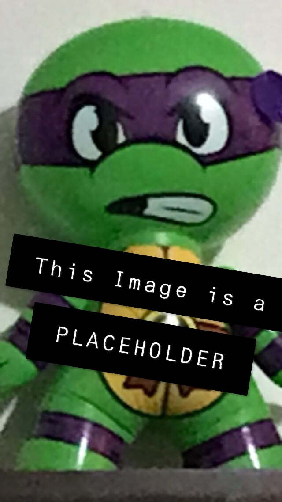

I am a sophomore Creative Technologies student studying Sound Design at Illinois State University. Although I love my emphasis of study, I am always excited to learn more about and participate in any field which will enhance my knowledge and ability to express my passions. It is for this reason that I am building a multimedia based portfolio; which I believe best showcases both my artwork and my personal development.